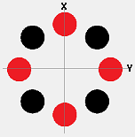

Purpose
This example models an RF octupole ion guide with the RF potentials applied via a user workbench program. This is a fairly simple model without entrance and exit optics. General background and theory on the octupole ion guide are available separately in the references at bottom.
Files in this Demo:
- README.html - description of this example
- octupole.iob - workbench
- octupole.gem - geometry (used to create octupole.pa#)
- octupole.fly2 - particle initial conditions
- octupole.lua - workbench user program, for RF voltages
Usage
How to run the demo:
- 1. View octupole.iob. (Click View on main screen and select the octuople.iob file.)
- 2. If this is your first time using the example, you will be asked to build/refine (confirm that and press Refine).
- 3. Select trajectory quality = 0. (In Particles tab, set TQual to 0.)
- 4. Fly ions. (Click Fly'm.) Examine the XY, ZY, and XZ views. Note that the ions are effectively trapped in stable oscillations. Examine parameters in the Variables tab. Examine output in the Log tab window, where it shows q4 = 3.59. Note that this q4 values satisfies the stability equation notes in the below Theory section (actually, it gives η = 0.38, which is slightly above 0.3--note also that this is not an ideal octupole field since circular rods are used).
- 5. Increase particle starting point radius (r) and Fly'm. (In Particle tab, change source radius from 0.8 to 2. Then click Fly'm.) Note that many of the particles splat on the rods now.
Theory
[Gerlich 1992] notes the stability parameter
η = (24) V (r/r0)6 / ((m/q)ω2r02),
where q is particle charge, V is RF voltage, m/q is particle mass-to-charge ratio, ω is RF angular frequency, r0 is half the minimum distance between opposite octupole rods, and r is the particle's radial position. Stability can be found when r < 0.8r0 and η < 0.3.
[Hagg 1986] provides the two system parameters (analogous to Mathieu constants in the quadrupole):
a4 = 32 U / ((m/q)ω2r02)
q4 = 16 V / ((m/q)ω2r02)
q4 = (2/3)(r0/r)2η.
This provides a limit of stability for radial distance (r) in terms of system parameters (q4 and r0) and constant η approximately 0.3.
When using circular rods of radius rrod, [Rao 2000] suggests that the optimal ratio rrod/r0 = 0.355 for the octupole (and 0.5375 for a hexapole).
Mirroring and Symmetry
Mirror planes: Octupoles with axis along Z can have X and Y mirroring planes if appropriately aligned on the XY plane:

You can reduce memory usage by a factor of four by modeling only one quadrant of the octupole in your potential array and enabling X and Y mirroring on the potential array to effect the other three quadrants. This example (octupole.pa# and the octupole.gem that creates it) utilizes XY mirroring. In general XY mirroring is possible with multipoles of N=2n+2 rods for positive integer n, which includes the quadrupole (see Example: quadrupole) (N=4), octupole (this example, N=8), dodecapole (N=12), hexadecapole (N=16), etc. Other even N cases like the hexapole (N=6) only have one mirror plane and the other symmetry plane is actually an "anti-mirror plane"--i.e. electrodes are identical in shape across the plane but have opposite potentials. It is still possible to take advantage of anti-mirror planes by enabling a regular mirror plane in the PA, setting all points on that anti-mirror plane to 0V electrode points (i.e. treated as a Dirichlett boundary condition during Refine and ideal grid during the Fly'm), and inverting the electric field in the negative half plane with an efield_adjust segment in a user program:
function segment.efield_adjust() -- simulate effect of anti-mirror plane
if ion_py_gu < 0 then
ion_efieldy_gu = - ion_efieldy_gu
end
end
2D planar symmetry and multiple PAs: If the octupole rods are very long and straight, the fields sufficiently far away from the rod ends will have very close to 2D planar symmetry (i.e. φ(x,y,z) = φ(x,y,0) for any point (x,y,z)). We can model this field using a 2D planar potential array rather than a 3D potential array. This reduces memory usage by orders of magnitude and also allows us to increase the accuracy by increasing grid density (number of grid points per mm) used to model it. The rod ends with fringe fields may still need to be modeled with 3D arrays. Example: quad takes such an approach of splitting long quadrupole rods into three arrays (2D mid section and two 3D end sections), and it is further discussed in Multiple PAs.
Reducing RAM usage by electrodes sharing solution arrays
The octupole has eight rods. Your first thought might be to define eight electrodes numbered 1 through 8 in your PA# file and control them via the reserved variables adj_elect01 through adj_elect08 in a user program. Doing so is not very efficient. When you refine such a PA# file, SIMION will create eight corresponding electrode solutions arrays (PA1 through PA8 files), as well as a base solution array (PA0 file) that you add to your workbench view. Anytime you first adjust a voltage from a user program via the adj_elect01 through adj_elect08 variables, SIMION will load the corresponding electrode solution array file in RAM. In effect, the amount of RAM usage during the Fly'm could be nine times (i.e. 8+1) the amount of RAM usage of the original PA# file.
Note, however, that in typical usage the voltages on these eight electrodes are not all independently adjustable. There are typically only two distinct voltages as a function of time t on these rods: V1(t) and V2(t). Now, electrodes that share the same voltage function may also share the same electrode number in SIMION and by implication also share the same electrode solution arrays. Doing so, results in only three array files (PA0, PA1, and PA2) loaded into RAM, reducing our memory usage by more than half. This is what the octupole.pa# and octupole.lua example does.
We may even go one step further. V1(t) and V2(t) are both linearly dependent. Namely, V1(t) = -V2(t). Electrodes that are linearly dependent can also share electrode solutions arrays, as described in Additional Fast Proportional Scalable Solutions. Use a text editor to create the following file named "octupole.pa+" in same directory as "octupole.pa#":
potential_array {
scalable_electrodes = {
[1] = {[1]=1, [2]=-1}, -- RF solution
[2] = {[1]=1, [2]=1}, -- DC solution
}
}
When you then refine the octupole.pa#, SIMION will interpret electrodes differently. The voltage #1 (adj_elect01) in the refined array (octupole.pa0) will be applied to what was electrode #1 defined in the octupole.pa# file, and the opposite voltage will be applied to what was electrode #2 in octupole.pa#. The voltage #2 (adj_elect02) in the refined array (octupole.pa0) will be added to both electrodes #1 and #2 in the octupole.pa# file. So, in the refined array, adj_elect01 refers to the RF component of both electrodes, and adj_elect02 refers to the DC component. After making this change, you should therefore remove the "adj_elect02 = - tempvolts" line in octupole.lua. The electrode solution array octupole.pa2 will then not even by loaded during the Fly'm. You may, however, adjust voltage #2 from the Fast Adjust GUI (or the pa:fast_adjust function in SIMION 8.1 programs) prior to doing the Fly'm since this method doesn't keep the solution array in RAM. In fact, you may remove the line "[2] = {[1]=1, [2]=1}, -- DC solution" in the octupole.pa+ file if you like, and then this octupole.pa2 file will not even be generated. Note that any applied constant DC offset to potentials does not affect electric fields (since the electric field is defined as the negative gradient of the potential φ, and grad (φ + C) = grad φ for any constant DC offset C), particle trajectories are only affected by fields not potentials, and so any constant DC offset is not important for particle trajectory calculations.
If there is no DC component to the field whatsoever, we could even replace the two arrays (octupole.pa0 and octupole.pa1) with one array. Currently the only way to do this is to create a "basic" potential array (i.e. octupole.pa without any other array files), with rods given alternating voltages of +1V and -1V, and then remove your fast_adjust segment and replace it with an efield_adjust segment to rescale the existing field according to a sinusoidal function, like this:
function segment.efield_adjust() local omega = _frequency_hz * (1E-6 * 2 * math.pi) local theta = phase_angle_deg * (math.pi / 180) local tempvolts = sin(ion_time_of_flight * omega + theta) * _rfvolts + _dcvolts -- Attenuate exiting fields. ion_dvoltsx_gu = ion_dvoltsx_gu * tempvolts ion_dvoltsy_gu = ion_dvoltsy_gu * tempvolts ion_dvoltsz_gu = ion_dvoltsz_gu * tempvolts end
The Example: RF demo (factor.lua file), also demonstrates such an approach.
SIMION 8.2 "Early Access" Additions
octupole_ideal_build.lua is a batch mode user program that Refines an octupole (octupole_ideal.pa) with idealized electrode shapes and compares its calculated field against the theoretically exact potential φ = Vmax * (x^4 + y^4 - 6 * x^2 * y^2) / R0^4. It outputs octupole_ideal_vdiff.pa (array differencing calculated potentials and theoretical potentials) and octupole_ideal_ediff.pa (array differencing calculated field magnitudes and theoretical field magnitudes). These can be examined using the PE/Contour functions in the View screen. Observe where the fields differ the most.
See Also
- [*] Bruce E. Wilcox, Christopher L. Hendrickson and Alan G. Marshall Improved ion extraction from a linear octopole ion trap: SIMION analysis and experimental demonstration. Journal of the American Society for Mass Spectrometry Volume 13, Issue 11, November 2002, Pages 1304-1312. -- general background; uses SIMION
- [*] V. V. K. Rama Rao and Amit Bhutani. International Journal of Mass Spectrometry Volume 202, Issues 1-3, 16 October 2000, Pages 31-36. -- uses SIMION
- [*] Conny Hägg and Imre Szabo. New ion-optical devices utilizing oscillatory electric fields. III. Stability of ion motion in a two-dimensional octopole field. International Journal of Mass Spectrometry and Ion Processes Volume 73, Issue 3, 28 November 1986, Pages 277-294.
- [*] Conny Hägg and Imre Szabo. New ion-optical devices utilizing oscillatory electric fields. IV. Computer simulations of the transport of an ion beam through an ideal quadrupole, hexapole, and octopole operating in the rf-only mode. International Journal of Mass Spectrometry and Ion Processes Volume 73, Issue 3, 28 November 1986, Pages 295-312.
- Myoung Choul Choi, Hyun Sik Kim, Sunghwan Kim, Jong Shin Yoo. Simulation Study to Improve Ion Transmission Efficiency through the Gate Valve for an External Ion Injection FTICR-MS. ASMS2006 Poster.
Other SIMION Examples:
- Example: Quadrupole - realistic quadrupole mass filter
- Example: Geometry - contains hexapole GEM.
- Example: poisson\octupole (poisson\octupole_sc) - RF octupole ion guide incorporating space-chage effects with the Poisson solver or charge repulsion features.
- Example: Pseudopotential calculation for RF trap
Source
- 2013-05-20 [8.2EA]: Add octupole_idea_build batch program example, comparing calculated and theoretical fields.
- 2007-09: Author: D.Manura